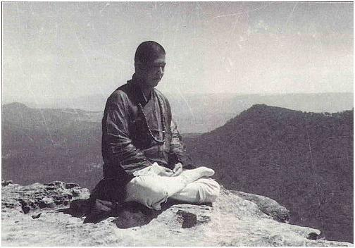

某次，暗中畫了一道符，藏於身上，然後叫人拿了個瓦碗、三粒骰子，實行玩擲骰遊戲。
我在心中先想要擲出的點數，跟著叫對方擲，果然命中率使我驚異不已！原來道教符咒的力量不可少看。
後來修煉下去，就不再用有形的紙筆硃砂了，而是隔空用手印寫符。之後守戒再進步，連手印亦不用了，就運心力直接寫出來，同樣有效。
我問師父：「有些符可以認得出來是中文字，但某些符字雖是中文結構，卻完全不懂是什麼字，比如所謂那些雲字頭鬼字腳的就是了。」
師父說：「這當然不是人間文字，所以一般人肯定看不懂，這是天文，用來號令鬼神的。有些秘字是用來作為符膽，符膽是一符之靈魂，是所有法力匯合之處。」
「師父，這些符板是師父親自雕刻的嗎？」
「啊！小孩子，這些不是符板，而是真言梵咒的木雕呀。」
「有什麼用呢？師父」
「這是超度鬼類及地獄道等陰界眾生用的。」
「師父，可不可以教我呀？我好想學。」
「哈哈哈！這些筆記，你就通通拿去看吧！」
「多謝師父！」
「你看著，這叫五雷指，這叫金剛指，這叫劍指，這叫三山印，來，我教你………」
「師父，好厲害呀！師父懂的那麼多，師父是跟誰學的？師公是誰呢？」
「你師公是民國時候的大居士，人稱劉淨密，即生解脫，往生西方淨土，部份密法我是跟你師公學的。」
沒有師父，亦沒有今日的我；師公、師父，請受不肖弟子三拜。
飲水思源，常憶師恩難報，小羊跪乳圖，是多麼撼動我的心靈！
佛菩薩早已安排好我的路，接續可以跟隨一些明師參學，其中包括西密大成就者諾那上師的兩位傳人尹法顯及胡伯豪上師、民國密教史上進藏學法的中國人根造上師等等，這些大師父，我都見過真人。
及後遇到中國密教史上唐密的偉大恩師，上寶下霞法師，直接得到烏樞沙摩明王法之真傳。
這個大法，傳承自宋朝禪宗高僧－圓悟克勤禪師。他是五祖法演禪師一脈直傳的門下大弟子，是中國禪宗臨濟宗楊歧派的一代宗師。印光大師曾說：「楊歧燈盞明千古，寶壽生姜辣萬年。」克勤禪師的大弟子就是大慧宗杲了。
宋徽宗賜紫衣給克勤禪師，並賜法號為佛果禪師，諡號真覺；禪宗《碧巖錄》就是他所編的名著。
我啟蒙恩師，十分尊重宣化上人度輪法師；之後我有機會親自去拜見宣化長老並聽他說法。上人剛下車，我與大家在門口合掌歡迎上人到來說法；上人走過我身邊的時候，停了數秒，給了我一個特別的眼神，我立時會心；之後他停下來，讓我向他頂禮。
到上人圓寂後，我們為上人舉辦追思紀念法會；上人大弟子美國萬佛聖城前主持恆實法師親自率團蒞臨，我得以最近距離凝視著上人的眾多舍利子由他弟子一塊塊、一顆顆供放在玻璃箱子中給人瞻仰的時候，心有多麼依依難捨的感覺呀！

前世緣，今世見；我與上人出家在家弟子的緣份，一直連綿至今。
宣化上人本身專修《首楞嚴真言》及《四十二手眼法》；但上人深深明白釋迦牟尼佛的最後遺訓，知道《烏樞沙摩明王法》的重要性，所以特別從國內禮請少林高僧海燈法師，親赴美國萬佛城傳授此法。
及後我遇到馮馮前輩及其大作中時常提到的堂伯父馮公夏老居士，成為了忘年之交，亦師亦友。馮公夏老居士為前任加拿大溫哥華世界佛教會會長，佛道雙修，桃李天下，他叫我做「晉瑋」；而馮馮前輩則稱呼我為談老師，實不敢當。之後機緣成熟，我會公開我們通訊的親筆手稿。因為我一向不太著重這些身外之物，想不到現在會寫博客，或許可以給人留個紀念或一點勉勵。有時我們是寫越洋傳真通訊的，但年代久遠，希望紙張不會褪色發黃吧。
回首前塵，仿如昨日；宣化長老、根造上師、胡伯豪上師、馮馮前輩、馮公廈前輩及恩師寶霞法師亦相繼圓寂；多一位高僧大師圓寂，就少一盞末法大明燈；生生死死，死死生生，來來去去，去去來來，這場金剛般若夢，到幾時才可夢醒呢？！
聚散皆是緣，禍福豈無憑；
擔當天下眾生事，何計生前身後評！
正法天空閃爍著幾顆星，人間的一股佛正氣，
在馳騁縱橫………
藥師如來聖誕紀念日